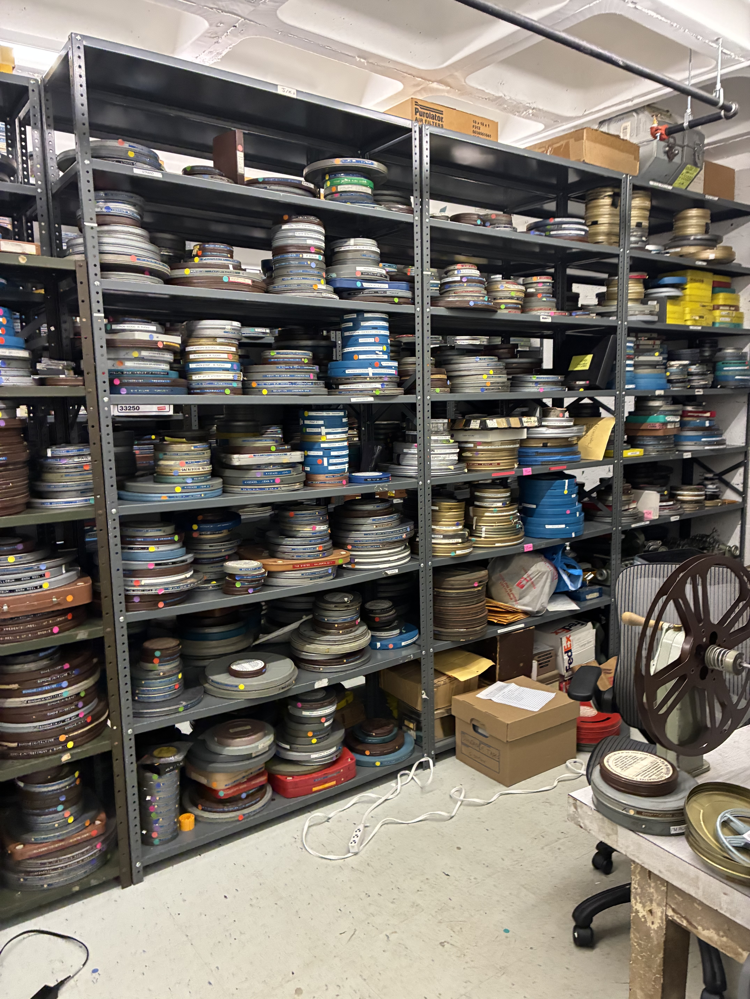

A selfie, taken with a Game Boy Camera and exported using the GB Operator.
I'd like to become an archivist and help present and preserve audiovisual material, specifically moving-image, obsolete, and overlooked media.
:-)
I'm a part-time graduate student at Pratt Institute pursuing an MS in Library and Information Science, and Advanced Certificate in Archives. I also work, full-time, as a web producer for the American Physical Society...and I'm seeking employment.
In early 2027, I'll begin an archival internship with the Film-Makers' Cooperative, the oldest non-profit organization devoted to the collection, preservation, and distribution of experimental film and media art in New York City.

Most of my experience has been with nonprofits in digital producer, project manager, and web content roles, primarily in the arts. I have worked for:
I've also been an archival intern at:
I hold an MS in Applied Digital Sociology from Hunter College, and a BS in Science, Technology, and Society from North Carolina State University.
It's been years since I made a website from scratch. This will be a good starting point to revisit later, when I have more time.